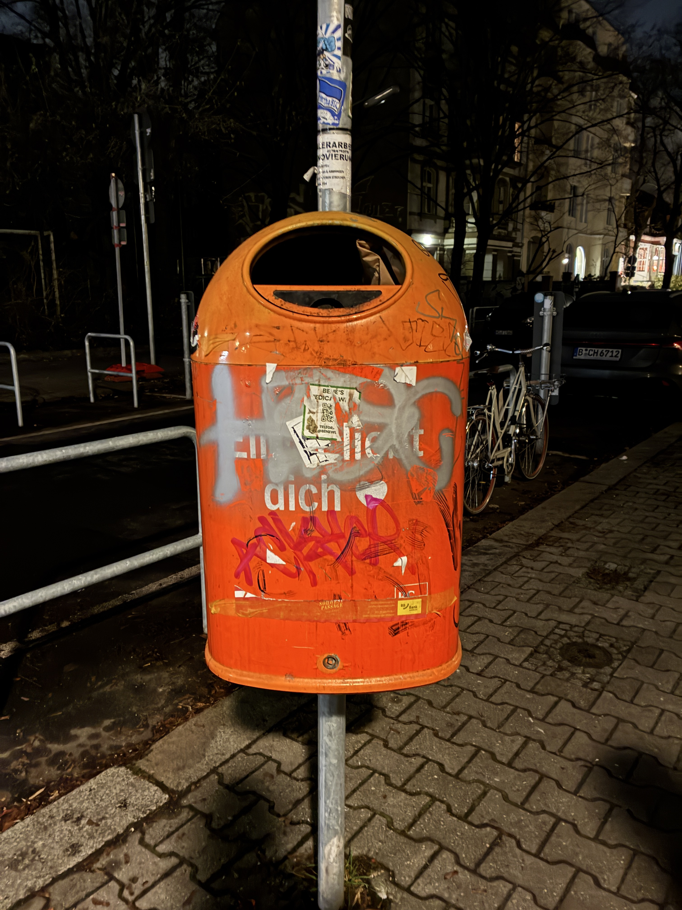

Lass uns den Weg zur Transformation öffnen!
Krise belastet. Hier findest du Projekte und Initiativen, die emotionale Unterstützung dabei bieten, Schmerz zuzulassen und zu verarbeiten
 Angebote bei Einsamkeit
Angebote bei Einsamkeit Zuhörtelefon für Studierende
Zuhörtelefon für Studierende Psychologische Beratung an der FU
Psychologische Beratung an der FU Initiative Sustain It!
Initiative Sustain It! Initiative Blühender Campus
Initiative Blühender Campus Fridays for Climate Justice FU
Fridays for Climate Justice FU Unigardening Netzwerk
Unigardening Netzwerk Campusmagazin FURIOS
Campusmagazin FURIOS